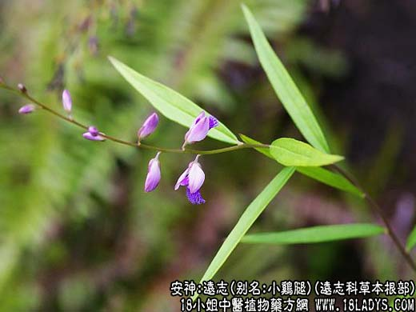

【中药概述】
远志，别名：葽绕、蕀蒬、棘菀、细草、小鸡腿、小鸡眼、小草根，为远志科草本植物远志或卵叶远志的根。辛、苦，微温。归肺、心经。
1．宁心安神：用于心阳下交于肾，肾阴上交于心，如因心肾不交的失眠、健忘、惊悸等，常配茯苓，枣仁，地黄，党参，夜交藤，五味子等。如（<千金方>定志丸）。
2．祛痰止咳：用于咳嗽痰多，可与桔梗，杏仁，甘草等配伍；痰阻心窍的精神错乱，常与胆南星，牛黄，石菖蒲配伍。
3．消散痈肿：用于痈疽疮毒、乳房肿痛等。
【药效鉴别】
本品还有益志的作用。可用于因心肾不足而致的记忆力减退、善忘、精力不集中等，常配菖蒲，龙骨，龟板，麦冬，五味子，柏子仁等。
【应用与配伍】
1．于惊悸，失眠健忘。远志主入心肾，既能开心气而宁心安神，又能通肾气而强志不忘，为交通心肾，安定神志之佳品。故多用治心肾不交之心神不宁，惊悸不安，失眠健忘等症，常与人参、龙齿、茯神等配伍，如安神定志丸。
2．于痰阻心窍，砌病友狂。本品味辛通利，既能祛痰，又利心窍，故用治痰阻心窍之癫痫抽搐及痰迷癫狂证。如治癫痫昏仆、痉挛抽搐，可与半夏、天麻、全蝎等配伍，治疗癫狂发作，又与石菖蒲、郁金、白矾等同用。
3．用于咳嗽痰多。本品入肺祛痰止咳，故治疗痰多粘稠、咳吐不爽者。每与杏仁、贝母、桔梗等同用。
4．用于痈疽毒，乳房肿痈。本品苦泄温通，疏通气血之壅滞而消痈散肿。可治一切痈疽，不问寒热虚实，单用研末，黄酒送服，并外用调敷患处即效。
【药理作用】
1．对中枢神经的作用：远志煎剂20g／kg灌胃，能显著对抗东莨菪碱所致的小鼠记忆获得障碍。全远志、皮、木均有强催眠药的作用，全远志有较强的抗惊厥作用。
2．对子宫的作用：远志流浸膏对豚鼠、兔、猫、狗等离体或在体的受孕或未孕子宫，皆有增加子宫收缩及肌紧张的作用。
3．祛痰作用：远志皮部溶血作用无较木部为强，全远志，皮有祛痰作用，木无作用。
4．抗菌：远志乙醇提取液在体外对革兰阳性细菌、痢疾杆菌、伤寒杆菌及人型结核杆菌有抑制作用。
近代研究：远志能使支气管分泌增加，促使支气管内容物容易咯出，有祛痰作用，可用于支气管炎等，常配杏仁，紫菀，前胡，甘草等。
【化学成分】
含多种运志皂甙、脂肪油、树脂、运志醇、运志定碱等。
【用量用法】
3——10g，水煎服，或入剂。
【使用注意】
有胃炎及胃溃疡者慎用。
本文解释权归中药名称大全，本文地址https://www.daquan.com/post/1964.html